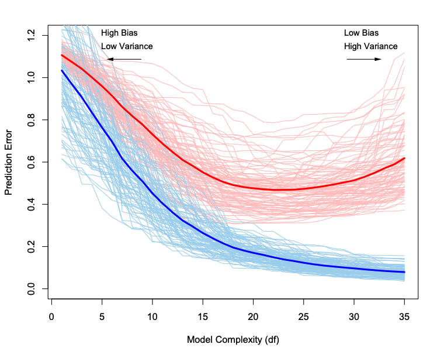
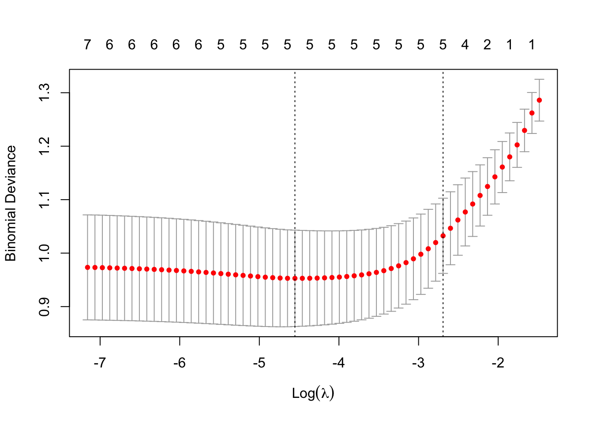
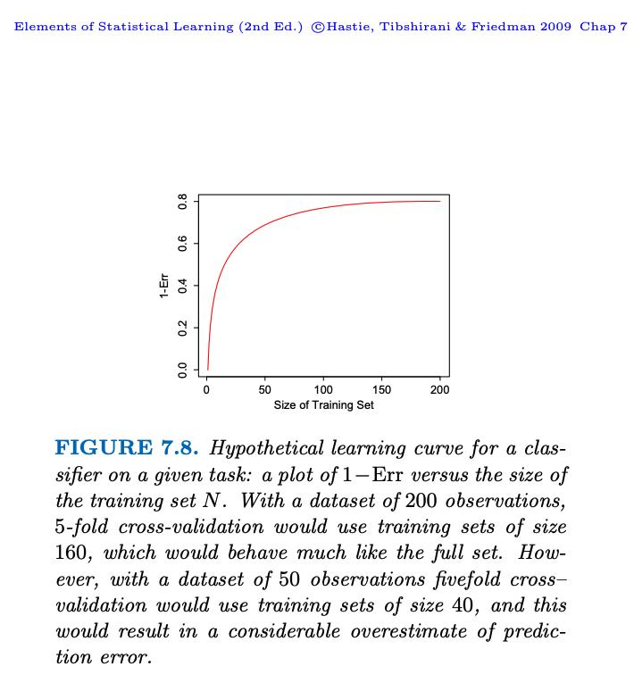

MA8701 Advanced methods in statistical inference and learning
P1W1: Model selection and assessment
Messages to students
Course homepage: https://wiki.math.ntnu.no/ma8701/2025v/start
- Read before the W2-lectures:
- ESL Ch 7.1-7.x
- James et al. (2023) Ch 10.8 on interpolation and double descent
- ESL Ch 7.x-7.6
- ESL 7.10-7.12
- Work on exercises in the bottom of this page after the W2-lectures.
Learning
Quotation - Jonas von Essen
Plan for the week
- Look at \(\text{EPE}(x_0)\) (now called Err(\(x_0\))) and how model complexity can be broken down into irreducible error, squared bias and variance (should be known from before), and expland to double descent
- Study EPE (Err) unconditional and conditional on the training set
- Study optimism of the training error rate, and how in-sample error may shed light
- Cross-validation and .632 bootstrap estimates of EPE
- How will we build on this in the rest of the course?
Model selection and assessment
We use a training set to estimate \(\hat{f}\).
The generalization performance of \(\hat{f}\) can be evaluated from the EPE (expected prediction error) on an independent data set.
We use this for
- Model selection: select the best model for a specific task - among a set of models
- Model assessment: evaluate the performance of a selected model
If we are in a data rich situation we “just” divide our data into three parts, and use
- one for training
- one for validation (model selection)
- one for testing (model assessment)
A typical split might be 50-60% training and 20-25% validation and test, but this depends on the complexity of the model to be fitted and the signal-to-noise ratio in the data.
The focus in Ch 7 of ESL is to present methods to be used in the situations where we do not have enough data to rely on the training-validation-testing split.
And, even if we have enough data - what we now will learn will give us insight into much used methods for model assessment and model selection!
The bias-variance trade-off
(ESL 2.4 p 26 and 7.3)
Assume additive error model (mainly regression setting): \[ Y=f(X)+\varepsilon\] where \(\text{E}(\varepsilon)=0\) and \(\text{Var}(\varepsilon)=\sigma_{\varepsilon}^2\).
For the bias-variance decomposition we only consider the squared loss. Why?
In Ch 7 we use the notation Err instead of EPE (expected prediction error) that we used in Ch 2, and now we have estimated \(f\) by \(\hat{f}\).
Let
- \(\text{Err}(x_0)\) be the expected prediction error of a regression fit \(\hat{f}(X)\) at a (new) input value \(X=x_0\).
- The expected value is over \((X,Y)\) for Err, and we may also look at
\[ \text{Err}=E_{x_0} \text{Err}(x_0)\] How can we partition \(\text{Err}(x_0)\) into different sources?
\[ \text{Err}(x_0)=\text{E}[(Y-\hat{f}(x_0))^2 \mid X=x_0]=\sigma_{\varepsilon}^2 + \text{Var}[\hat{f}(x_0)]+[\text{Bias}(\hat{f}(x_0))]^2\]
- First term: irreducible error, \(\text{Var}(\varepsilon)=\sigma^2\) and is always present unless we have measurements without error. This term cannot be reduced regardless how well our statistical model fits the data.
- Second term: variance of the prediction at \(x_0\) or the expected deviation around the mean at \(x_0\). If the variance is high, there is large uncertainty associated with the prediction.
- Third term: squared bias. The bias gives an estimate of how much the prediction differs from the true mean. If the bias is low the model gives a prediction which is close to the true value.
Group activity
- Remind yourself on how this derivation was done and the meaning of each term.
- What is the role of \(x_0\) here? How can you get rid of \(x_0\)?
Derivation
If you need to refresh your memory of the bias-variance trade-off, you might also look at the exam Problem 2 TMA4268 2018 exam with solutions
Also: TMA4268 and in particular Module 2
The following is a derivation:
\[\begin{align*} \text{Err}(x_0)&=\text{E}[(Y-\hat{f}(x_0))^2 \mid X=x_0]\\ &=\text{E}[Y^2 + \hat{f}(x_0)^2 - 2 Y \hat{f}(x_0)\mid X=x_0] \\ &= \text{E}[Y^2\mid X=x_0] + \text{E}[\hat{f}(x_0)^2\mid X=x_0] - \text{E}[2Y \hat{f}(x_0)\mid X=x_0]\\ &= \text{Var}[Y\mid X=x_0] + \text{E}[Y\mid X=x_0]^2 + \text{Var}[\hat{f}(x_0)\mid X=x_0] + \text{E}[\hat{f}(x_0)\mid X=x_0]^2 - 2 \text{E}[Y\mid X=x_0]\text{E}[\hat{f}(x_0)\mid X=x_0] \\ &= \text{Var}[Y\mid X=x_0]+f(x_0)^2+\text{Var}[\hat{f}(x_0)\mid X=x_0]+\text{E}[\hat{f}(x_0)\mid X=x_0]^2-2f(x_0)\text{E}[\hat{f}(x_0)\mid X=x_0]\\ &= \text{Var}[Y\mid X=x_0]+\text{Var}[\hat{f}(x_0)\mid X=x_0]+(f(x_0)-\text{E}[\hat{f}(x_0)\mid X=x_0])^2\\ &= \text{Var}(\varepsilon\mid X=x_0) + \text{Var}[\hat{f}(x_0)\mid X=x_0]+[\text{Bias}(\hat{f}(x_0))\mid X=x_0]^2 \end{align*}\]
(For some applications also the training Xs are fixed.) See the exercises below to study the results for \(k\)NN and OLS.
Expected prediction error
(ESL 7.2 and 7.4, and we are now back to a general loss function - but first have regression in mind)
If we now keep the training set fixed (we would do that in practice - since we often only have one training set):
\[ \text{Err}_{\cal T}=\text{E}[L(Y,\hat{f}(X))\mid {\cal T}]\]
as before the expected value is with respect to \((X,Y)\), but the training set is fixed - so that this is the test set error is for this specific training set \({\cal T}\).
Getting back to the unconditional version, we take expected value over ALL that is random - now including the training set \[ \text{Err}=\text{E}(\text{E}[L(Y,\hat{f}(X))\mid {\cal T}])=\text{E}_{\cal T} [\text{Err}_{\cal T}]\]
We want to estimate \(\text{Err}_{\cal T}\) (but we will soon see that it turns out that most methods estimate \(\text{Err}\)).
Training error
(also referred to as apparent error)
For a regression problem: The training error is the average loss over the training sample: \[\overline{\text{err}}=\frac{1}{N} \sum_{i=1}^N L(y_i,\hat{f}(x_i))\]
Group discussion
Look at Figure 7.1 (with figure caption) on page 220 in the ESL book. The text reads that “100 simulated training sets of size 50” and that “lasso produced sequence of fits” (this means that we have different model complexities on the x-axis).
Explain what you see - in particular what are the red and blue lines and the bold lines. What can you conclude from the figure?
- Red lines=
- Bold red line=
- Blue lines=
- Bold blue line=
Conclusion
(from Figure 7.1)
The training error \(\overline{\text{err}}\) is not a good estimate for the \(\text{Err}_{\cal T}\) nor the \(\text{Err}\).
Loss function and training error for classification
- \(X \in \Re^p\)
- \(G \in {\cal G}=\{1,\ldots,K\}\)
- \(\hat{G}(X) \in {\cal G}=\{1,\ldots,K\}\)
0-1 loss with \(\hat{G}(X)=\text{argmax}_k \hat{p}_k(X)\) \[L(G,\hat{G}(X))=I(G\neq \hat{G}(X))\] \(-2\)-loglikelihood loss (why \(-2\)?): \[ L(G,\hat{p}(X))=-2 \text{log} \hat{p}_G(X)\]
Test error (only replace \(\hat{f}\) with \(\hat{G}\)): \[ \text{Err}_{\cal T}=\text{E}[L(Y,\hat{G}(X))\mid {\cal T}]\] \[ \text{Err}=\text{E}[\text{E}[L(Y,\hat{G}(X))\mid {\cal T}]]=\text{E} [\text{Err}_{\cal T}]\]
Training error (for 0-1 loss) \[\overline{\text{err}}=\frac{1}{N}\sum_{i=1}^N I(g_i\neq \hat{g}(x_i))\] Training error (for \(-2\)loglikelihood loss) \[\overline{\text{err}}=-\frac{2}{N}\sum_{i=1}^N \text{log}\hat{p}_{g_i}(x_i)\]
Double descent
Optimism of the training error rate
(again - focus is on regression)
First, nothing new, but new notation \((X^0,Y^0)\) to specify that a new test observation is drawn from the joint distribution \(F\) (both over new \(X\) and new \(Y\)):
\[\text{Err}_{\cal T}=\text{E}_{X^0,Y^0}[L(Y^0,\hat{f}(X^0))\mid {\cal T}]\]
and then the averaging over the training set (both \(X\)s and \(Y\)s in the training set): \[\text{Err}=\text{E}_{\cal T} \text{E}_{X^0,Y^0}[L(Y^0,\hat{f}(X^0))\mid {\cal T}]\]
This is also called extra-sample error (in contrast to what we now will define to be in-sample).
We saw before - from the ESL Figure 7.1, the training error \(\overline{\text{err}}\) is (in general) less than (or equal to) the true test error, so not a good estimator for the test error.
\[\overline{\text{err}}=\frac{1}{N} \sum_{i=1}^N L(y_i,\hat{f}(x_i))\]
[In Exercise 2.9 we prove that the expected training error is smaller or equal the expected error of a testset - for MLR. Important to work on this exercise!]
Part of this is due to where the \(X\) values are “placed”. The test input vectors need not be “in the same positions” as in the training \(X\) values (when the mean is taken over the full distribution of \(X\)).
To eliminate this “confusing fact”, calculations can be made be assuming the \(X\)-values in the training data are kept fixed - and this is called the in-sample error. (We did the same in TMA4267 using the Fahrmeir et al book, Chapter 3.4.)
In-sample error
\[\text{Err}_{\text{in}}=\frac{1}{N}\sum_{i=1}^N \text{E}_{Y^0}[L(Y_i^0,\hat{f}(x_i))\mid {\cal T}]\]
Observe that we now take the expected value over distribution of the response - but that the (new) responses are found at the original training points. The training predictor positions \(x_i\), \(i=1,\ldots, N\) are fixed. In addition the responses in the training data are also kept fixed, so the only random quantity here is the new responses at the fixed predictors.
Optimism
Optimism is defined as the difference between the in-sample error and the training error:
\[ \text{op}=\text{Err}_{\text{in}}-\overline{\text{err}}\]
Average optimism
is defined as the expected value of the optimism, where the expectation is taken over the distribution of the training responses - denoted \({\mathbf y}\) (training predictors still kept fixed):
\[ \omega=\text{E}_{\mathbf y}(op)=\text{E}_{\mathbf y}(\text{Err}_{\text{in}})-\text{E}_{\mathbf y}(\overline{\text{err}})\]
Observe that if we write \({\cal T}\) then the expectation is taken over the distribution of both the predictors and responses in the training set, and we here write \({\mathbf y}\) for taking the distribution only over the reponses in the training set (not the predictors in the training set).
We will focus on “modelling” \(\omega\), “instead of” \(\text{Err}\).
Covariance result
For squared error, 0-1 loss, and “other loss functions” it can be shown
\[ \omega=\frac{2}{N} \sum_{i=1}^N \text{Cov}(\hat{y}_i,y_i)\]
Group discussion
- Give an interpretation of the result.
- How do you think this result can be used?
- Study the derivation of the covariance formula for squared loss. This is Exercise 7.4 and solutions are available here and in the ESL solutions to exercises.
Interpretation:
- how much the training error underestimates the true error depends on how strongly the observed response \(y_i\) affects its own prediction \(\hat{y}_i\).
- the harder we fit the data the greater the covariance - which increases the expected (averaged) optimism.
Expected in-sample prediction error
\[ \text{E}_{\mathbf y}(\text{Err}_{\text{in}})=\text{E}_{\mathbf y}(\overline{\text{err}})+\frac{2}{N} \sum_{i=1}^N \text{Cov}(\hat{y}_i,y_i)\] This is the starting point for several methods to “penalize” fitting complex models!
Result for \(\omega\)
Additive error model and squared loss: \(Y=f(X)+\varepsilon\), with \(\hat{y}_i\) obtained by a linear fit with \(d\) inputs (or basis functions) \[\omega=2 \frac{d}{N}\sigma_{\varepsilon}^2\]
Proof: ESL 7.1
For the proof: Remember that the trace of a square matrix is the sum of the diagonal elements, and trace is often denoted tr.
What is the trace (tr) for MLR?
\(\text{tr}({\mathbf H})=\text{tr}({\mathbf X}({\mathbf X}^T{\mathbf X})^{-1}{\mathbf X}^T)=\text{tr}(({\mathbf X}^T{\mathbf X})^{-1}{\mathbf X}^T{\mathbf X})=\text{tr}({\mathbf I})_{p+1}=(p+1)\) if intercept model with \(p\) covariates.
Group discussion
- Comment on the derivation of \(\omega\) - anything unclear?
- How does \(d\) and \(N\) and \(\sigma^2_{\varepsilon}\) influence the average optimism?
Observe that the optimism increases with \(d\) and decreases with \(N\).
Comment: versions of the formula hold approximately for other error models than linear with squared loss (ESL mention binary data and entropy loss), but not in general for 0-1 loss (page 231, bottom, with reference to Efron 1986 - consult the ESL book).
Three ways to perform model selection
Estimate of expected in-sample prediction error (ESL Ch 7.5-7.6): We may develop the average optimism for a class of models that are linear in the parameters (Mallows Cp, AIC, BIC, …) - and compare models of different complexity using \(\text{E}_{\mathbf y}(\text{Err}_{\text{in}})\). Remark: in-sample error is not of interest, but used to choose between models effectively.
Estimate \(\text{Err}\) (ESL Ch 7.10-7.11): We may instead use resampling methods (cross-validation and bootstrapping) to estimate \(\text{Err}\) directly (and use that for model selection and assessment).
In the data rich approach: we have so much data that we use a separate validation set for model selection (and a separate test set for model assessment). That is not the focus of ESL Ch 7.
Estimates of (expected) in-sample prediction error
We have the following result:
\[ \text{E}_{\mathbf y}(\text{Err}_{\text{in}})=\text{E}_{\mathbf y}(\overline{\text{err}})+\frac{2}{N} \sum_{i=1}^N \text{Cov}(\hat{y}_i,y_i)\] where now \[ \omega=\frac{2}{N} \sum_{i=1}^N \text{Cov}(\hat{y}_i,y_i)\] We now want to get an estimate of the average optimism, to get an estimate of the in-sample prediction error:
\[ \widehat{\text{Err}_{\text{in}}}=\overline{\text{err}}+\hat{\omega}\]
Comment: observe that \(\overline{\text{err}}\) is now an estimate of \(\text{E}_{\mathbf y}(\overline{\text{err}})\) and even though we write \(\widehat{\text{Err}_{\text{in}}}\) we are aiming to estimate \(\text{E}_{\mathbf y}(\text{Err}_{\text{in}})\). Focus now is on \(\hat{\omega}\)!
\(C_p\) statistics
for squared error loss (follows directly from the \(\omega\)-result for additive error model)
\[C_p=\overline{\text{err}}+2\frac{d}{N}\hat{\sigma}_{\varepsilon}^2\] where \(\hat{\sigma}_{\varepsilon}^2\) is estimated from a “low-bias model” (in MLR we use a “full model”).
(This method is presented both in TMA4267 and TMA4268, see also exam question Problem 3 in TMA4267 in 2015 and solutions.)
Akaike information criterion (AIC)
Based on different asymptotic (\(N \rightarrow \infty\)) relationship for log-likelihood loss functions
\[ -2 \text{E}[\log P_{\hat{\theta}}(Y)]\approx - \frac{2}{N} \text{E}[\text{loglik}]+2 \frac{d}{N} \]
- \(P_{\hat{\theta}}(Y)\): family of density for \(Y\) where the true density is included
- \(\hat{\theta}\): MLE of \(\theta\)
- \(\text{loglik}\): maximized log-likelihood \(\sum_{i=1}^N \log P_{\hat{\theta}}(y_i)\)
Logistic regression with binomial loglikelihood
\[ \text{AIC}=- \frac{2}{N} \text{loglik}+2 \frac{d}{N}\] Multiple linear regression if variance \(\sigma_{\varepsilon}^2=\hat{\sigma}_{\varepsilon}^2\) assumed known then AIC is equivalent to \(C_p\).
For nonlinear or similar models then \(d\) is replaced by some measure of model complexity.
AIC as function of tuning parameter (back to squared error loss)
We have a set of models \(f_{\alpha}(x)\) indexed by some tuning parameter \(\alpha\).
\[\text{AIC}(\alpha)=\overline{\text{err}}(\alpha)+2 \frac{d(\alpha)}{N}\hat{\sigma}_{\varepsilon}^2\]
- \(\overline{\text{err}}(\alpha)\): training error
- \(d(\alpha)\) number of parameters
- \(\hat{\sigma}_{\varepsilon}^2\) estimated variance of large model
The model complexity \(\alpha\) is chosen to minimize \(\text{AIC}(\alpha)\).
This is not true if the models are chosen adaptively (for example basis functions) this formula underestimates the optimism - and we may regard this as the effective number of parameters is larger than \(d\).
Expected in-sample prediction error for binary classification
(Efron and Hastie (2016) page 225)
Misclassification loss function: \(L(\hat{G}(X),G)=1\) for incorrect classification and \(0\) for correct.
The training error is then \(\overline{\text{err}}=(\#{(\hat{G}_i\neq G_i}))/N\).
The insample error is then \(\frac{1}{N}\sum_{i=1}^N P(G_{0i}(X_i)\neq \hat{G}(X_i))\).
The estimate of (expected) in-sample prediction error is then \[ \widehat{\text{Err}_{\text in}}=\frac{\#{(\hat{G}_i\neq G_i})}{N}+\frac{2}{N}\sum_{i=1}^N \text{Cov}(\hat{G}(X_i),G(X_i))\] where \[\text{Cov}(\hat{G}(X_i),G(X_i))=\text{E}(\hat{G}(X_i)\cdot G(X_i))-\text{E}(\hat{G}(X_i))\cdot \text{E}(G(X_i))\] \[=\mu_i (1-\mu_i)[P(\hat{G}(X_i)=1 \mid G(X_i)=1)-P(\hat{G}(X_i)=1 \mid G(X_i)=0)]\] where \(\mu_i=P(G(X_i)=1)\).
Group discussion
What is the take home message from this part on “Estimates of (expected) in-sample prediction error”?
The effective number of parameters
(ESL 7.6)
The number of parameters \(d\) can be generalized into an effective number of parameters. We will look at linear fitting method:
\[ \hat{\mathbf y}={\mathbf Sy}\] where \({\mathbf S}\) as a \(n \times n\) matrix depending on covariates \(x_i\) but not responses \(y_i\).
- MLR \({\mathbf H}={\mathbf X}({\mathbf X}^T{\mathbf X})^{-1}{\mathbf X}^T\)
- cubic smoothing splines
- ridge regression
The effective number of parameters is
\[\text{df}({\mathbf S})=\text{trace}({\mathbf S})\]
Additive error model and squared loss: \(Y=f(X)+\varepsilon\) with \(\text{Var}(\varepsilon)=\sigma_{\varepsilon}^2\) then \[ \sum_{i=1}^N \text{Cov}(\hat{y}_i,y_i)=\text{trace}({\mathbf S})\sigma_{\varepsilon}^2\] leading to a generalization \[\text{df}(\hat{{\mathbf y}})=\frac{\sum_{i=1}^N \text{Cov}(\hat{y}_i,y_i)}{\sigma_{\varepsilon}^2}\] See exercise 7.5 to prove this.
Cross-validation (CV)
(ESL Ch 7.10, 7.12 - most should be known from TMA4268)
The aim is to estimate \(\text{Err}_{\cal T}\), but from simulation analyses (ESL Ch 7.12) it turns out that cross-validation estimates \(\text{Err}\) “the best”.
The starting point for the method is that we only have one training set - and try to use that for either model selection or model assessment (not both).
What to do when both is needed, is not covered in this chapter. Nested cross-validations aka two-layers of cross-validation is one possibility. Another is to set aside data for a test set for model assessment, but use the training set in cross-validation for model selection.
Formal set-up for model assessment
The allocation of observation \(\{1,\ldots,N\}\) to folds \(\{1,\ldots,K\}\) is done using an indexing function \(\kappa: \{1,\ldots,N\} \rightarrow \{1,\ldots,K\}\), that for each observation allocate the observation to one of \(K\) folds.
Further, \(\hat{f}^{-k}(x)\) is the fitted function, computed on the observations except the \(k\)th fold (the observations from the \(k\)th fold is removed).
The CV estimate of the expected prediction error \(\text{Err}=\text{E}_{\cal T} \text{E}_{X^0,Y^0}[L(Y^0,\hat{f}(X^0))\mid {\cal T}]\) is then \[ \text{CV}(\hat{f})=\frac{1}{N}\sum_{i=1}^N L(y_i,\hat{f}^{-k(i)}(x_i))\]
Efron and Hastie (2016) page 218: “\(\text{CV}(\hat{f})\) is estimating the average prediction error of the algorithm producing \(\hat{f}\), not \(\hat{f}\) itself”.
Formal set-up for model selection
The indexing function \(\kappa\) is unchanged, and for the fitting function we add a tuning parameter \(\alpha\): \(f(x,\alpha)\) such that \(\hat{f}^{-k}(x,\alpha)\) is the fitted function using tuning parameter \(\alpha\), with the \(k\)th fold removed from the model fitting.
The expected prediction error is estimated by
\[ \text{CV}(\hat{f},\alpha)=\frac{1}{N}\sum_{i=1}^N L(y_i,\hat{f}^{-k(i)}(x_i,\alpha))\]
We find the best tuning parameter \(\hat{\alpha}\) that minimize the \(\text{CV}(\hat{f},\alpha)\). Alternatively the one-standard error rule can be used: choose the most parsimonious (“smallest”) model whose error is no more than one standard error above the error of the best model.
This best chosen model is then fit to all the data. (ESL page 242).
Pima indian example
We will use the classical data set of diabetes from a population of women of Pima Indian heritage in the US, available in the R MASS package. This version of the data has no missing values. The following information is available for each woman:
- diabetes:
0= not present,1= present - npreg: number of pregnancies
- glu: plasma glucose concentration in an oral glucose tolerance test
- bp: diastolic blood pressure (mmHg)
- skin: triceps skin fold thickness (mm)
- bmi: body mass index (weight in kg/(height in m)\(^2\))
- ped: diabetes pedigree function.
- age: age in years
We will use the default division into training and test in the MASS library, with 200 observations for training and 332 for testing. (We only use the training data here now.)

Group discussion
The lasso logistic regression (to be studied in Part 2) was used to fit the data, and some loss function is plotted on the vertical axis (more in Part 2) and on the horisontal axis the loss for different fits for different choices of a complexity parameter is given. 10-fold crossvalidation is used. (Just assume that a generic prediction is used, this is not meant to be specific for the lasso.)
- What are the red dots and how have they been calculated?
- What are the the vertical bars sticking out of each red dot, and how have they been calculated? What do they picture?
- What (your choice) is the optimal choice of the complexity parameter?
Choice of \(K\)
- Popular choices are 5 and 10 based on observations in simulation studies- and arguments similar to a bias-variance trace off.
- \(K=N\) is called leave-one-out cross-validation LOOCV, and gives the lowest bias for estimating the \(\text{Err}\).

Generalized cross-validation (GCV)
For LOOCV with squared loss and linear fitting. Remember \[ \hat{\mathbf y}={\mathbf Sy}\] For many fitting methods (including MLR)
\[ \frac{1}{N}\sum_{i=1}^N [y_i-\hat{f}^{-i}(x_i)]^2=\frac{1}{N}\sum_{i=1}^N [\frac{y_i-\hat{f}(x_i)}{1-S_{ii}}]^2\] where \(S_{ii}\) is the \(i\)th diagonal element of \({\mathbf S}\). This leads to the GCV approximation:
\[ \text{GCV}(\hat{f})=\frac{1}{N}\sum_{i=1}^N [\frac{y_i-\hat{f}(x_i)}{1-\text{tr}({\mathbf S})/N}]^2\] where we recognise the effective number of parameters \(\text{trace}({\mathbf S})\). In some settings the \(\text{trace}({\mathbf S})\) is computed more easily than the individual elements \(S_{ii}\).
The wrong and the right way to do cross-validation
In short: make sure that all part of the model fit process is “inside” the CV.
See learning material from TMA4268: Module 5: Resampling, and I also recommend to work on Problem 3 with solutions
Group discussion
Can you give one example of a right way to do cross-valiation and also a wrong way? If you want you may used the Pima-indians as an example, but other examples may also be used.
Bootstrap methods
(ESL Ch 7.11 - bootstrapping is known from TMA4268 and TMA4300, but not the special case of estimating \(\text{Err}\)). Bootstrap in TMA4268: Module 5
Notation: \({\mathbf Z}=(z_1,\ldots,z_N)\) is the training set with \(z_i=(x_i,y_i)\).
Aim: Of interest is some quantity calculated from the data \({\mathbf Z}\), denoted \(S({\mathbf Z})\). We will have focus on the expected prediction error.
Resampling: We draw with replacement from \({\mathbf Z}\) a total of \(N\) observations into \({\mathbf Z}^{*b}\). We repeat this \(B\) times.
Estimator for expected predicted error \(\text{Err}\):
\[\widehat{\text{Err}}_{\text{boot}}=\frac{1}{B}\frac{1}{N}\sum_{b=1}^B \sum_{i=1}^N L(y_i,\hat{f}^{*b}(x_i))\]
However - \(\widehat{\text{Err}}_{\text{boot}}\) is not a good estimator: bootstrap datasets are acting as training data and the original data as a test sample - and the two samples have observations in common.
This overlap can make predictions too good. Remember, in CV we have no overlap.
Q: What is the probability that observation \(i\) is included in bootstrap sample \(b\)?
The problem is given in TMA4268 Module 5 as Problem 1 with (handwritten) solutions.
The answer is \(1-(1-\frac{1}{N})^N\approx 1-e^{-1}=0.632\).
Why is this relevant?
What if we try to change the bootstrap \(\text{Err}\) estimator - so that we for each observation \(i\) only keep predictions from bootstrap samples where this observation is not present? Then we would mimic the CV-estimator.
The leave-one-out bootstrap estimate:
\[\widehat{\text{Err}}^{(1)}=\frac{1}{N} \sum_{i=1}^N \frac{1}{\lvert C^{-i} \rvert} \sum_{b \in C^{-i}} L(y_i,\hat{f}^{*b}(x_i))\] where \(C^{-i}\) are the indices in the bootstrap sample \(b\) that do not contain observation \(i\), and \(\lvert C^{-i} \rvert\) is the number of samples. (\(B\) must be large enough that we do not get any \(C^{-i}\)s that are empty, or leave out these zero sets in the formula.)
Comment: this is also called out-of-bootstrap, and is closely connected to the popular out-of-bag estimate for random forests.
There is an addition fix to make the estimate even better.
Since the average number of distinct observations in each bootstrap sample is approximately \(0.632 N\) - and the bootstrap sample behaves like a training set - this gives a socalled training-set-size bias (similar to C with \(K=2\)), meaning that the leave-one-out bootstrap estimator will be biased upwards. This can be fixed by weighing together the leave-one-out boostrap estimator with the training error.
The “.632” estimator:
\[\widehat{\text{Err}}^{(.632)}=0.368 \overline{\text{err}}+0.632 \widehat{\text{Err}}^{(1)}\]
According to ESL (page 251): the derivation of the .632 estimator is complex, and the estimator is expected to work well in situation where the data is not overfitted, but may break down in overfit situations.
According to CASI (page 323) the .632 rule is less variable than the leave-one-out CV.
Example of this on page 251-252: two equal size classes where predictors independent of class, classification with \(1\)NN gives \(\overline{\text{err}}=0\) and \(\widehat{\text{Err}}^{(1)}=0.5\) and thus \(\widehat{\text{Err}}^{(.632)}=0.632\cdot 0.5=0.316\), where here the true error rate is \(0.5\).
There is an improved version of the estimator - taking into account the amount of overfitting, leading to an adjustment to the weight \(w=0.632\) (and \(1-w=0.368\)) dependent on a socalled no-information error rate=\(\gamma\)=the error rate of the prediction rule when predictors and class labels are independent.
\[\hat{\gamma}=\frac{1}{N^2}\sum_{i=1}^{N}\sum_{i´=1}^N L(y_i,\hat{f}(x_{i´}))\] Further the relative overfitting rate is defined to be
\[ \hat{R}=\frac{\widehat{\text{Err}}^{(1)}-\overline{\text{err}}}{\hat{\gamma}-\overline{\text{err}}}\]
Finally, the “.632+”-estimator is
\[\widehat{\text{Err}}^{(.632+)}=(1-\hat{w}) \overline{\text{err}}+ \hat{w} \widehat{\text{Err}}^{(1)}\] where \(\hat{w}=\frac{0.632}{1-0.368 \hat{R}}\).
For details on this approach consult ESL page 252-253.
Conclusions
Group discussion:
Construct a “mind map” or “overview sheet” or “concept map” (mind map with verbs on arrows between entities) for the “Model assessment and selection” topics, and write down important take home messages!
Some concept that could be in the map: \(\text{Err}\),\(\text{Err}_{\cal T}\),\(\text{Err}_{\text{in}}\),\(\widehat{\text{Err}}_{\text{in}}\),\(\overline{\text{err}}\),\(\omega\),\(\text{Cov}(\hat{y}_i,y_i)\),\(\text{trace}(S)\),df,\(\text{CV}(\hat{f})\), bootstrap, \(\widehat{\text{Err}}^{(1)}\), \(0.632\), \(0.368\), model assessment, model selection.
Final remarks
- In a perfect world we would be rich on data and can divide available data into sets for training, validation and testing
- We have derived cool covariance-result on expected optimism for training error related to in-sample prediction error (the covariance) - that is used for finding model selection criteria (but not for model assessment). If we can´t calculate a formula for the covariance, bootstrapping can be used to do this (Efron and Hastie (2016) Equation 12.64 on åage 224).
- Estimating expected prediction (test) error for a particular training set is not easy in general (if we only have this one training set), but cross-validation and bootstrapping may provide reasonable estimates of the expected test error \(\text{Err}\).
- If resampling needed for model assessment: take average of many 10-fold CV \(\text{Err}\) estimates?
Exercises
1) Expected training and test MSE for linear regression
Do exercise 2.9.
Important take home message: We have proven (for MLR) that the expected test MSE is always at least as large as the expected training MSE.
2) Establish the average optimism in the training error
\[ \omega=\frac{2}{N} \sum_{i=1}^N \text{Cov}(\hat{y}_i,y_i)\] Exercise 7.4
Relate the covariance to the trace of a linear smoother
Exercise 7.5
Need to know about covariance and variance of linear combinations. The reading list in TMA4267 included Härdle and Simar (2015): Applied Multivariate Statistical Analysis (fourth edition) - ebook from Springer available at NTNU. Alternatively classnotes from TMA4267 (page 58-59)
Derive the estimate of in-sample error
for the additive error model \[Y=f(X)+\varepsilon\] of Eq (7.24):
\[ \text{E}_{y}(\text{Err}_{\text{in}})=\text{E}_{y}(\bar{\text{err}})+2 \cdot \frac{d}{N} \sigma^2_{\varepsilon}\] Prove this for the MLR OLS solution.
Additive error model effective degrees of freedom
Exercise 7.6
Show that for an additive-error model, the effective degrees-of freedom for the \(k\)-nearest-neighbors regression fit is \(N/k\).
Hint: write this as a linear smoother.
UiO STK-IN4300/STK-IN9300 –– Statistical learning methods in Data Science
Exam 2018, Problem 2: Bootstrapping for model evaluation
Consider the following procedure to estimate the prediction error:
generate \(B\) bootstrap samples \(z_1,z_2,\ldots, z_B\) where \(z_b=\{(y_1^*,x_1^*),\ldots,(y_N^*,x_N^*)\}\), \(b=1,\ldots,B\) and \((y_i^*,x_i^*)\), \(i = 1, . . . , N\), is an observation sampled from the original dataset;
apply the prediction rule to each bootstrap sample to derive the preditions \(\hat{f}_b^*(x_i)\), \(b=1,\ldots,B\).
compute the error for each point, and take the average, \[\widehat{\text{Err}}_{\text{boot}}=\frac{1}{B}\sum_{b=1}^B \frac{1}{N}\sum_{i=1}^N L(y_i,\hat{f}_b^*(x_i))\]
Explain why this procedure is incorrect and suggest a different way to proceed which still uses a bootstrap approach.
Describe the 0.632 bootstrap and the 0.632+ bootstrap procedures, explaining in particular the rationale behind their construction.
Comparing methods
Exercise 7.9 (minus BIC).
For the prostate data of ESL Chapter 3, carry out a best-subset linear regression analysis, as in Table 3.3 (third column from left). Compute the AIC, five- and tenfold cross-validation, and bootstrap .632 estimates of prediction error. Discuss the results.
Solutions to exercises
Please try yourself first, or take a small peek - and try some more - before fully reading the solutions. Report errors or improvements to Mette.Langaas@ntnu.no. (The solutions given here are very similar to the UiO STK-IN4300 solutions, see link under References.)
UiO STK-IN4300/STK-IN9300 Solutions (from UiO)
- The procedure is incorrect because the prediction error is computed on observations already used to train the prediction rule. This lead to underestimation of the error (writing “too optimistic” was acceptable).
A possible solution is to compute the prediction error only on those observations (in average 36.8% of the original sample) not included in the bootstrap sample. Since this approach leads to overestimating the prediction error, solutions like those described in the point (b) has been implemented.
- The 0.632 bootstrap procedure addresses the problem of overestimation of the correct procedure described in point (a) by averaging it (with weight 0.632 and 0.368, respectively) with the training error (underestimated error). The result is a sort of compromise between overestimation and underestimation.
\[\widehat{\text{Err}}^{(\text{0.632})}=0.632 \cdot \widehat{\text{Err}}^{(1)}+0.368 \cdot \overline{\text{err}}\] where \(\overline{\text{err}}\) is the training error and \(\widehat{\text{Err}}^{(1)}\) the corrected procedure decribed in (a). Since the \(0.632\) and \(0.382\) weights may not be the best choice (e.g., in case of complete overfitting in the training set), the 0.632+ bootstrap has been developed. In the latter procedure,
\[\widehat{\text{Err}}^{(\text{0.632+})}=\hat{w} \cdot \widehat{\text{Err}}^{(1)}+ (1-\hat{w}) \cdot \overline{\text{err}}\]
the weights depend on the relative overfitting rate, so the 0.632+ bootstrap can be seen as a better compromise between the overestimation and underestimation of the prediction error done by the corrected procedure described at point (a) and the training error, respectively.
Reference links
ESL official errata: and choose “Errata” in the left menu
Bibliography
Efron, Bradley, and Trevor Hastie. 2016. Computer Age Statistical Inference - Algorithms, Evidence, and Data Science. Cambridge University Press. https://hastie.su.domains/CASI/.
Hastie, Trevor, Robert Tibshirani, and Jerome Friedman. 2009. The Elements of Statistical Learning: Data Mining, Inference, and Prediction. Vol. 2. Springer series in statistics New York. hastie.su.domains/ElemStatLearn.
James, Gareth, Daniela Witten, Trevor Hastie, and Robert Tibshirani. 2023. An Introduction to Statistical Learning with Applications in r, Second Edition. Vol. 112. Springer.
Discussion and conclusions
- What are key take home messages from today´s teaching session?
- What do you plan to do before the next teaching session?
- Feedback on today´s teaching session?